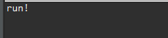
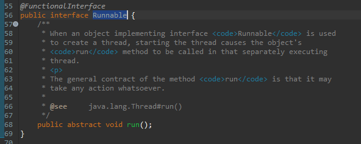
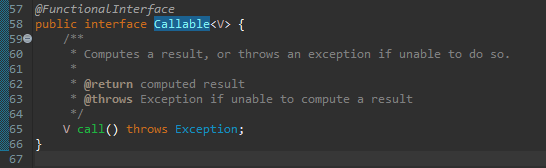
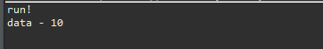
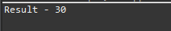

こんにちは。明月です。
この投稿はJavaにはラムダ(Lambda)を使う方法に関する説明です。
Javaには基本的にオブジェクト指向プログラミング(OOP)を中心でクラス単位で構成しています。つまり、関数だけ必要なプログラムを作ると思ってもJavaにはクラスを作成して関数を作成しなければならないです。
// インターフェース
interface Testable {
// 関数抽象化
void run();
}
// Testableインターフェースを継承
class Test implements Testable{
// 関数再定義
@Override
public void run() {
// コンソールに出力
System.out.println("run!");
}
}
// 実行クラス
public class Example {
// インターフェースTestableを継承したクラスを実行する関数
public static void test(Testable test) {
// runを呼び出す。
test.run();
}
// 実行関数
public static void main(String... args) {
// インスタンス生成
Testable obj = new Test();
// test関数を呼び出す。
test(obj);
}
}

この部分は以前に匿名クラスを説明した時に説明しました。
link - [Java] 18. 匿名クラス(Anonymous class)とクロージャ(closure)
上の例をみればrun関数でTestableを経書したクラスのインスタンスを生成しました。Javaの場合、特にアンドロイド開発する時にイベントを登録してCallback関数を作る時に上のパターンで作成されます。
test関数で実行フローを作成して最終にTestクラスのrun関数を呼び出す形です。
でも、再使用性が多くなるクラスではなく、一回性クラスなら上のパターンで作成することは悪いです。そのことに関して匿名クラスを作成する時に説明しました。
ここで、匿名クラスよりもっと簡単に作成する方法がラムダ関数式です。
// インターフェース
interface Testable {
// 関数抽象化
void run();
}
// 実行クラス
public class Example {
// インターフェースTestableを継承したクラスを実行する関数
public static void test(Testable test) {
// runを呼び出す。
test.run();
}
// 実行関数
public static void main(String... args) {
// ラムダ関数式、匿名クラスのnewの割り当てもなしで、すぐrun関数を実行する表現式
Testable obj = () -> {
// コンソールに出力
System.out.println("run!");
};
// test関数を呼び出す。
test(obj);
}
}
匿名クラスをラムダ関数式で変換する条件はインターフェースに抽象関数が必ず一つだけに作成しなければならないです。
インターフェースが二つ以上になるとラムダ式でどの関数を呼び出すのが分からなくなります。
Javaにはラムダ式でよく使うインターフェースが二つあります。RunnableインターフェースとCallableインターフェースです。


上のイメージをみればRunnableインターフェースとCallableインターフェースは抽象関数が一つだけあります。
RunnableインターフェースとCallableインターフェースの差異はリターン値が、voidかジェネリックタイプでObjectタイプかです。
import java.util.concurrent.Callable;
public class Example {
// Runnableインターフェースをパラメータにした関数
public static void test1(Runnable test) {
// 関数実行
test.run();
}
// Callableインターフェースをパラメータにした関数
public static <V> V test2(Callable<V> test) {
// CallableはthrowsでExceptionが設定されている。
try {
// Callableに設定値はジェネリックに設定したタイプだ。
return test.call();
} catch (Throwable e) {
return null;
}
}
// 実行関数
public static void main(String... args) {
// test1関数をラムダ式で呼び出した。
test1(() -> {
// コンソールに出力
System.out.println("run!");
});
// test2関数をラムダ式で呼び出した。
// Callableのジェネリックタイプはラムダ式のリターンデータタイプによって自動に設定
int data = test2(() -> {
// intタイプなのでtest2のリターンタイプはintタイプになる。
return 10;
});
// コンソールに出力
System.out.println("data - " + data);
}
}

ラムダ式は匿名クラスでできたクロージャ機能がラムダ式でも使えます。
public class Example {
// Runnableインターフェースをパラメータにした関数
public static void test1(Runnable test) {
// 関数実行
test.run();
}
// 実行関数
public static void main(String... args) {
// クロージャ機能を使うため、定数化する。
final int data = 10;
// test1関数をラムダ式で呼び出した。
test1(() -> {
// クロージャ機能でdata値を受け取って使える。
System.out.println("run! data - " + data);
});
}
}
ラムダ式でパラメータも使えます。インタフェースで関数のとおりにパラメータが設定します。
// インターフェース
interface LambdaExpression<T, V, S> {
// パラメータ、リターンタイプはすべてジェネリックタイプだ。
S run(T param1, V param2);
}
// 実行クラス
public class Example {
// 二つ目、三つ目に入力されるデータタイプでジェネリックタイプが自動に設定する。
public static <T, V, S> S test1(LambdaExpression<T, V, S> test, T param1, V param2) {
// LambdaExpressionインターフェースのrun関数で始め、二つ目パラメータを入力する。
return test.run(param1, param2);
}
// 実行関数
public static void main(String... args) {
// 二つ目、三つ目パラメータは10と20でVとSのジェネリックタイプはintタイプに設定
int ret = test1((p1, p2) -> {
// return値はintタイプ + intタイプなので自動にintに設定
return p1 + p2;
}, 10, 20);
// コンソールに出力
System.out.println("Result - " + ret);
}
}

p1とp2は10と20の値をintタイプのパラメータで受け取ります。そしてその値をtest1関数によって足して結果を変数retに30の値で格納します。最後に変数ret値をコンソールに出力すれば30の結果が表示されます。
このラムダ式はC/C++で関数ポインタ、関数系プログラムのcallback関数と似ているな形でプログラムが実行されます。
特にアンドロイドや様々ライブラリでイベントやリスナーみたいな形の設定でよく使えます。
ここまでJavaにはラムダ(Lambda)を使う方法に関する説明でした。
ご不明なところや間違いところがあればコメントしてください。
- [Java] 26. ファイル(IO)を扱う方法(ファイル作成、ファイル修正、アクセス日付変更とIOをclose(リソース返却)する理由、Closableインタフェース)2019/09/13 20:03:58
- [Java] 25. Objectクラス(notify、waitの使い方)2019/09/13 00:58:31
- [Java] 24. Javaの同期化(Synchronized)とデッドロック(Deadlock)2019/09/11 23:06:09
- [Java] 23. スレッドプール(Threadpool)を使う方法2019/09/10 21:55:36
- [Java] 22.スレッド(Thread)を使う方法2019/09/06 22:30:49
- [Java] 21. アノテーション(Annotation)を使う方法2019/09/05 22:58:20
- [Java] 20. iterator(for-each)とStream APIを使う方法2019/09/04 20:11:28
- [Java] 19. ラムダ(Lambda)を使う方法2019/09/03 20:37:14
- [Java] 18. 匿名クラス(Anonymous class)とクロージャ(closure)2019/09/02 20:30:34
- [Java] 17. ジェネリックタイプ(Generic type)を使う方法2019/08/27 19:05:44
- [Java] 16. 例外処理(try~catch~finally, throw)を使う方法2019/08/26 23:40:29
- [Java] 15. 列挙型(バイナリデータビット演算子の使用例)2019/08/23 19:46:10
- [Java] 14. オブジェクト指向プログラミング(OOP)の4つ特性(カプセル化、抽象化、継承、多相化)2019/08/22 20:08:37
- [Java] 13. 抽象クラス(abstract)と継承禁止(final)2019/08/22 00:06:20
- [Java] 12. インタフェース(interface)2019/08/20 23:46:23
- [Java] WebSocketでチャット履歴をローディングする方法2021/06/15 18:34:45
- [Java] WebSocketを利用してユーザ(サイト運用者)が他のユーザとチャットする方法2021/06/15 17:20:08
- [Design pattern] 1-2. ビルダーパターン(Builder pattern)2021/06/11 19:06:28
- [Design pattern] 1-1. シングルトンパターン(Singleton pattern)2021/06/09 19:40:05
- [Design Pattern] デザインパターンの紹介2021/06/08 20:42:36
- [Tools] Dbeaver(無料Sql queryブラウザツール)2021/04/28 18:26:49
- [Bootstrap] HTMLデザインのフレームワークのBootstrap紹介2020/07/30 19:06:36
- [Python] メール(smtplib)を送信する方法2020/07/27 18:38:43
- [Python] HttpConnection(requestsモジュール)でウェブサーバーで接続する方法2020/07/20 14:41:51
- [Python] Excel(openpyxl)を扱う方法2020/07/16 16:40:31
- [Python] ファイル圧縮、解凍(zipfile)する方法2020/07/14 19:14:22
- [Python] Apache cgiでPythonを使う方法2020/07/09 19:58:19
- [Python] Web serverを起動する方法(http.server)2020/07/09 00:13:13
- [Python] WebSocketを使う方法2020/07/07 17:29:18
- [Python] PythonとJavaのソケット通信する方法2020/07/03 18:35:50